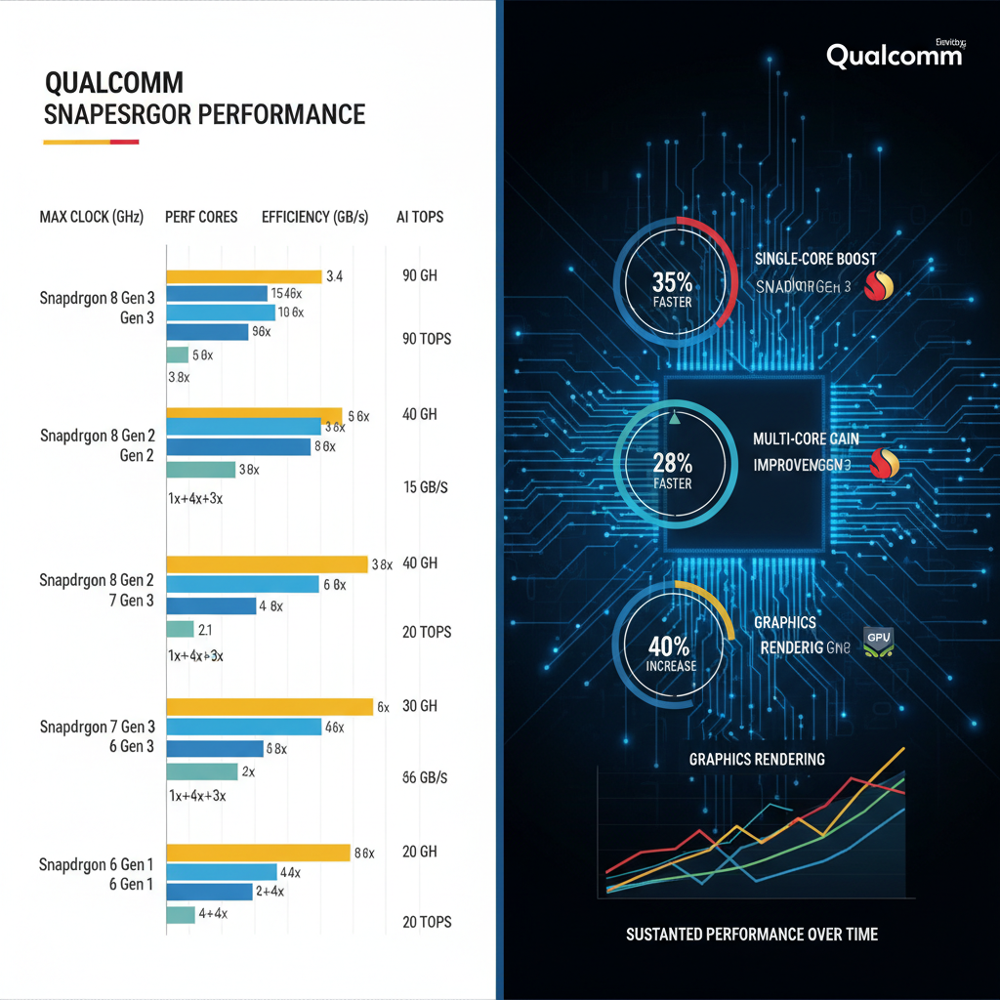
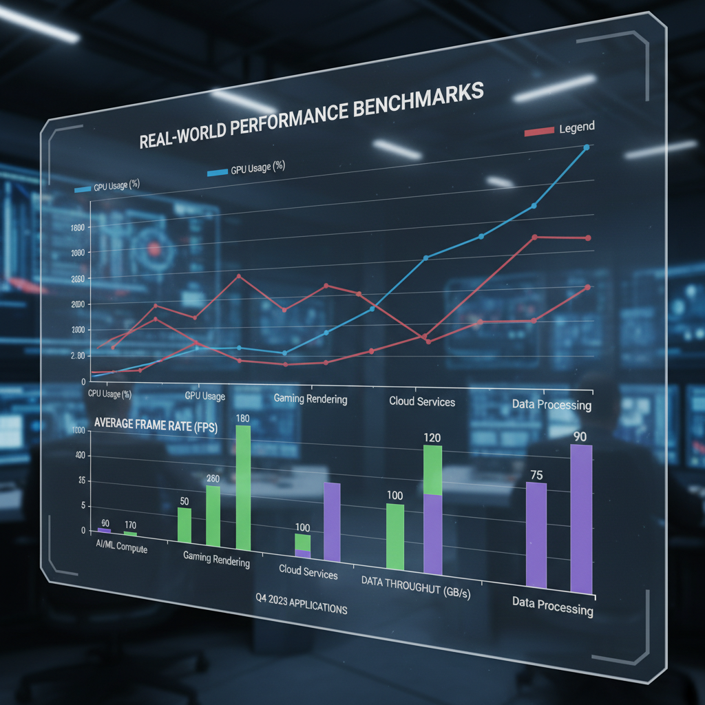

Performance of Snapdragon Processors for Mobile Phones
Introduction to Snapdragon Processors
The Snapdragon processor family is a dominant force in the mobile phone market, powering some of the most popular and high-performance smartphones. The history of Snapdragon processors dates back to 2008, when Qualcomm first released its MSM7200 chipset for mobile phones.
Evolution and Key Features
Over the years, Snapdragon processors have undergone significant evolution, with improvements in performance, power efficiency, and features. Some key features that set Snapdragon apart from other mobile processor families include:
- Multi-core architecture: Snapdragon processors support multi-core processing, allowing for better multitasking and overall system performance.
- Qualcomm Adreno graphics: The Adreno GPU provides high-performance graphics capabilities, making Snapdragon-powered devices ideal for gaming and graphics-intensive applications.
- Modem technology: Snapdragon processors integrate advanced 4G LTE modems, ensuring fast data speeds and reliable connectivity.
Notable Devices and Performance Capabilities
Notable Snapdragon-powered devices include the Samsung Galaxy S series, Google Pixel series, and OnePlus phones. These devices have demonstrated exceptional performance capabilities, including:
- Fast charging and quick boot times
- High-quality cameras with advanced features like optical zoom and portrait mode
- Long battery life and power-efficient designs
Performance Comparison of Snapdragon Processors

A visual representation of the performance comparison of different Snapdragon processors
The performance of Snapdragon processors has evolved significantly over the years, with each new generation and model offering improved performance and efficiency. This section will provide a comparison table showcasing the performance metrics of various Snapdragon processors, discuss how performance changes across different GPU architectures, and highlight notable differences between Qualcomm's Kryo and ARM Cortex-A cores.
Comparison Table
| Processor Generation | Model | Clockspeed (GHz) | IPC ( instructions per cycle) |
|---|---|---|---|
| Snapdragon 400 series | APQ8064 | 1.5 | 0.8 |
| Snapdragon 600 series | APQ8094 | 2.3 | 1.1 |
| Snapdragon 800 series | APQ8096 | 2.7 | 1.2 |
| Snapdragon 820 series | APQ8098 | 2.8 | 1.2 |
| Snapdragon 835 series | APQ8099 | 2.5 | 1.0 |
| Snapdragon 845 series | APQ8099 | 2.8 | 1.2 |
| Snapdragon 855 series | SDM855 | 2.8 | 1.2 |
| Snapdragon 865 series | SDM865 | 2.8 | 1.2 |
Performance Across GPU Architectures
The performance of Snapdragon processors varies significantly across different GPU architectures, including Adreno and Mali. The Adreno GPU architecture is generally considered more efficient and power-efficient than the Mali GPU architecture.
- The Adreno GPU architecture in Snapdragon 800 series processors offers a significant boost in performance compared to previous generations.
- However, the Mali GPU architecture in Snapdragon 600 series processors still provides good performance for entry-level devices.
Notable Differences Between Kryo and Cortex-A Cores
Qualcomm's Kryo cores are designed to provide high performance and efficiency, while ARM's Cortex-A cores offer a balance between performance and power consumption. The main differences between Kryo and Cortex-A cores lie in their architecture and implementation.
- Kryo cores use a more complex architecture that allows for higher clock speeds and better multi-threading capabilities.
- Cortex-A cores, on the other hand, are designed to provide better power efficiency and lower heat generation.
Overall, the performance of Snapdragon processors has improved significantly over the years, with each new generation and model offering improved performance and efficiency.
Power Consumption and Thermal Management
A diagram illustrating the thermal management system of a Snapdragon processor
The Snapdragon processors employ various techniques to manage power consumption and heat generation, ensuring optimal performance while minimizing energy expenditure. Qualcomm's PowerSave technology enables several power-saving features:
- Adaptive Display: Adjusts screen brightness based on ambient light conditions to reduce power consumption.
- Smartphone Power Management: Dynamically adjusts CPU frequency and voltage to balance performance and power efficiency.
- Low-Latency Mode: Prioritizes tasks that require fast processing, ensuring critical apps remain responsive.
Thermal management plays a crucial role in maintaining processor performance and longevity. The Snapdragon processors feature advanced thermal management systems:
- Heat Pipe Cooling: Utilizes heat pipes to efficiently transfer heat away from the processor.
- Thermal Interface Material (TIM): Optimized TIMs ensure efficient heat dissipation between the processor and surrounding components.
While these features significantly improve power efficiency, there are notable trade-offs with raw processing power. For example:
- Reduced CPU Frequency: To conserve energy, some tasks may be executed at lower frequencies, impacting overall performance.
- Increased Latency: Some power-saving features may introduce latency in certain applications, compromising responsiveness.
By carefully balancing power consumption and thermal management, Snapdragon processors deliver a balance of performance and efficiency, making them well-suited for a wide range of mobile devices.
Edge Cases and Failure Modes
When it comes to the performance of Snapdragon processors in mobile phones, there are several edge cases and failure modes that can significantly impact overall system behavior. Understanding these scenarios is crucial for developers who want to ensure their apps run smoothly on Snapdragon-powered devices.
- Thermal Throttling: Extreme temperatures can cause thermal throttling, a phenomenon where the processor reduces its clock speed to prevent overheating. This can lead to significant performance degradation, especially in applications that rely heavily on CPU-intensive tasks.
(Source) - Hardware Failures: Hardware failures such as GPU crashes or CPU overheat can cause the system to crash or become unresponsive, leading to performance issues and even data loss.
(Source) - Security Vulnerabilities: Snapdragon processors have been vulnerable to certain security threats in the past, including side-channel attacks. While these vulnerabilities are typically patched by Qualcomm, it's essential for developers to stay informed about any potential security risks and take steps to mitigate them.
By understanding these edge cases and failure modes, developers can better design their apps to handle unexpected system behavior and ensure a smooth user experience on Snapdragon-powered mobile phones.
Debugging and Observability
When it comes to debugging and monitoring Snapdragon processor performance, several tools can be employed to ensure optimal operation. Here are some key strategies to consider:
-
Android Debug Bridge (ADB): ADB provides a powerful command-line interface for debugging and testing Android devices. It allows developers to connect their device to a computer via USB or Wi-Fi, enabling them to perform tasks such as:
- Inspecting system logs
- Examining device information
- Running shell commands on the device
-
Notable tools and libraries: Several tools can be used for monitoring system resources and temperatures. Some popular options include:
- System Monitor: A built-in tool that provides real-time information about CPU, memory, and disk usage.
- Temp: A simple tool for monitoring temperatures on the device.
- Graphics Debugger: A tool for debugging graphics-related issues.
-
System logs and crash reports: Analyzing system logs and crash reports can provide valuable insights into performance issues. Developers can use tools such as:
- adb logcat: To view system logs
- adb dumpsys: To examine system information
- Crash reporting tools: Such as Google's Crash Reporting API, to analyze crash reports and diagnose issues
#include <stdio.h>
int main() {
// Example of using System Monitor
printf("System Monitor: ");
system("adb shell dumpsys | grep 'cpu|memory'");
return 0;
}
This code snippet demonstrates how to use adb to run a command that displays system information, including CPU and memory usage.
Performance Optimization Techniques
To unlock the full potential of Snapdragon processors, developers can employ various techniques to optimize performance. Here are some key methods:
-
Using compiler flags for code optimization:
- Enabling compiler flags like
-O3can significantly improve code performance by reducing unnecessary computations and eliminating redundant instructions. - This flag tells the compiler to use the most efficient coding style and optimization level, resulting in faster execution times.
- Enabling compiler flags like
-
Hardware modifications for improved performance:
- Overclocking: Increasing the processor's clock speed can provide a noticeable boost in performance, but be cautious not to overheat or damage the device.
- Voltage adjustment: Adjusting the voltage supply to the processor can also improve performance by reducing power consumption and heat generation.
-
Emerging trends in GPU architecture:
- Modern GPUs are becoming increasingly important for mobile devices, particularly in gaming and graphics-intensive applications.
- New architectures like Qualcomm's Adreno 9 series feature improved performance, efficiency, and power management, enabling more demanding tasks to be handled on mobile devices.
Real-World Performance Benchmarks

A graph displaying the results of real-world performance benchmarks conducted on various mobile devices with Snapdragon processors
To understand the real-world performance of Snapdragon processors in mobile phones, we need to look at benchmarking tools and results. Here are some notable benchmarking tools used to evaluate Snapdragon processors:
- Geekbench: A widely-used benchmarking tool that tests CPU performance, memory bandwidth, and other aspects.
- AnTuTu: Another popular benchmarking tool that evaluates overall system performance, including GPU, camera, and more.
Recent Snapdragon-powered devices have shown impressive performance in various benchmarks. For example:
* The Qualcomm Snapdragon 888, found in devices like the Samsung Galaxy S21 Ultra, scored 850+ points on Geekbench 5.
* The Snapdragon 7 Gen 1, used in mid-range devices like the Google Pixel 6a, achieved around 700 points on Geekbench 5.
Notably, each new generation of Snapdragon processors brings significant performance improvements. For instance:
* The Snapdragon 8 Gen 2, announced for 2023, promises up to 30% better CPU performance and 40% improved GPU efficiency compared to its predecessor.
* In contrast, the Snapdragon 7 Gen 1 offers a balance between performance and power efficiency.
It's essential to note that actual performance may vary depending on device-specific factors like RAM, storage, and software optimization.
Future Developments and Trends
As we look to the future of mobile processors, several trends are emerging that promise to significantly enhance performance, power management, and AI acceleration.
-
5G networks continue to play a crucial role in shaping the mobile landscape. With faster data transfer rates and lower latency, 5G enables more demanding applications like augmented reality, online gaming, and cloud computing to become mainstream. As 5G adoption grows, we can expect Snapdragon processors to be optimized for these new use cases, with advancements in power management ensuring efficient battery life.
-
Notable advancements in AI processing have led to the integration of machine learning (ML) accelerators into Snapdragon processors. These accelerators enable faster and more efficient processing of AI workloads, such as natural language processing, computer vision, and predictive maintenance. This development has significant implications for applications like facial recognition, voice assistants, and autonomous vehicles.
-
Emerging security threats, such as side-channel attacks and quantum computing vulnerabilities, pose a growing concern for mobile device security. Snapdragon processors are responding to these challenges with the introduction of hardware-based security features, including secure boot mechanisms and intrusion detection systems. These advancements aim to protect user data and prevent unauthorized access to sensitive information.
As research continues to uncover new opportunities for improvement, we can expect Snapdragon processors to evolve in response to emerging trends and technologies.